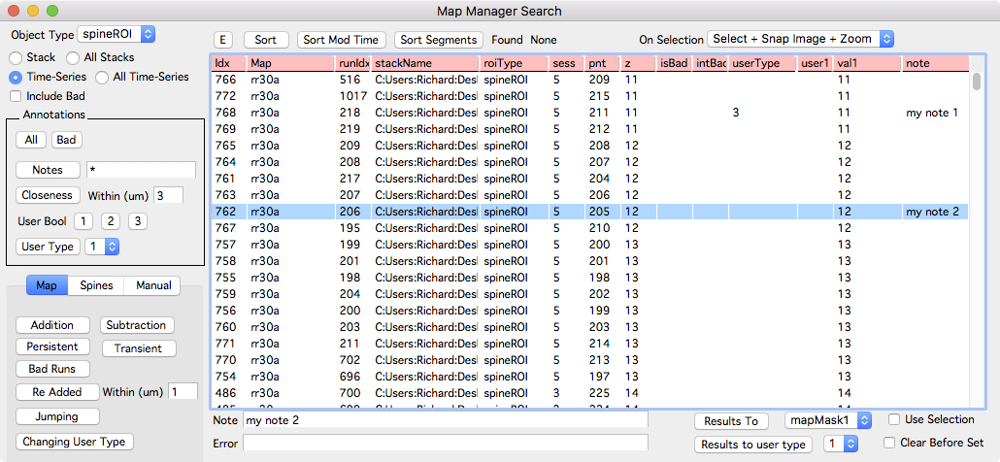
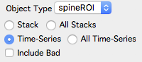
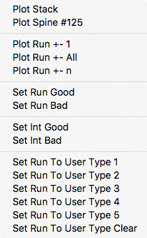
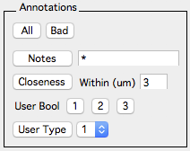
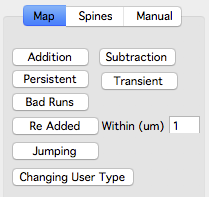
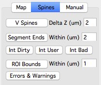
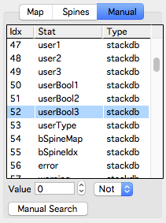

Search
The search panel is used to find annotations based on a criterion. Searches can be performed within a single stack or time-series, or across multiple stacks and time-series.
Opening the search panel
- From the main menu ‘MapManager - Search’
- From the time-point window ‘Search’ button

Performing A Search
Clicking any of the buttons down the left hand side of the panel will perform a search and the resulting annotations will be show as a list on the right.
Before performing a search, choose the scope of the search:

- Object Type. Select the type of object to search.
- Stack. Search the front-most stack window.
- All Stacks. Search all stacks in the stack browser.
- Time-Series. Search the selected time-series in the time-series window.
- All Time-Series. Search all opened time-series in the time-series window.
- Include Bad. Include annotations marked bad in the search results.
Interacting with the search results

Right-click an annotation in the search results to open the annotation in a stack or run plot. Selecting an annotation (left-click) will select that annotation in any open stack and map plots. Likewise, selecting an annotation in a stack or map plot will select the annotation in the search result list (if it is in the list).
Sort the search results by a value by clicking on its column header. Additional ‘smart’ sorting is provided with the sort buttons:
- Sort. Sort by idx, map, segmentID, sess, pnt
- Sort Mod Time. Sort by mSeconds, idx
- Sort Segments. Sort by map, sess, segmentID, pDist, idx
Right-click the columns of the search results to choose the columns to display. This includes ‘Date Time’, ‘Note’, ‘Errors and Warnings’, ‘Spine Info’, and ‘Canvas’.
Editing the search results
Selected annotations in the search results can be edited.
- n: Set selected annotation note.
- g: Set selected annotation to good.
- b: Set selected annotation to bad.
- 0 .. 9: Set selected annotation to a specific user type.
Types of searches

Annotations
- All. Find all annotations of ‘Object Type’.
- Bad. Find annotations marked bad.
- Notes. Find annotations with notes matching the specified search criteria. Use an asterix (*) as a wildcard. Use ‘*’ to find all annotations with a note, use thistext* to find annotation with notes starting with ‘thistext’ or use *thistext to find annotations with notes ending with ‘thistext’.
- Closeness. Find annotations that are within specified distance (um) of each other. This is useful for finding overlapping/duplicate annotations.
- User Bool. NOT USED.
- User Type. Find annotations tagged with a user type 0, 1, 2, …

Map Tab
Used to find annotation within a time-series (map).
- Addition. Find annotations that are addition.
- Subtraction. Find annotations that are subtraction.
- Persistent. Find annotations that are persistent (not that usefull).
- Transient. Find annotations that are transient. Transient annotations occur in only one time-point.
- Bad Runs. Find annotations that have a mixture of good and bad within their respective run. This is used for debugging and will be removed.
- Re Added. (Spine Annotations) Find added spines that have a previous subtraction (on a previous timepoint) that is within specified distance along the segment tracing.
- Jumping. Advanced, not used.
- Changing User Type. Find all annotations that are connected to other annotations with a different user type.

Spines Tab
Used to find spine annotations.
- V Spines. Find spines where the z-plane of the spine head is farther (in z) from the connected backbone/dendrite line. This is useful for finding spines that project out of the imaging plane.
-
Segment Ends. Find spines within specified distance (um) of the end of their segment/backbone line. This is useful for finding problematic spines during spine intensity analysis.
- Int Dirty. (spine intensity analysis) Find spines with dirty intensity analysis. Spines with dirty intensity analysis can be analyzed in the main map manager time-series, intensity tab.
- Int User. (spine intensity analysis) Find spines that have their intensity analysis parameters manually set. Individual spine annotation can have their intensity analysis parameters set in a stack window using the info panel (keyboard i).
- Int Bad. (spine intensity analysis) Find spines marked as intensity bad.
- ROI Bounds. (spine intensity analysis) Find spines with background ROI within specified distance (um) from edges of image. This is useful if stack alignment has been run causing images to be shifted/rotated resulting in undefined regions on the edge of the image.
- Errors and Warning. (spine intensity analysis) Find annotations with Intensity Analysis errors and warnings. To display the Errors and Warnings columns, right-click the column headers in the search results and select ‘Errors and Warnings’. See intensity analysis.

Manual Tab
Used to find annotations matching a user specified criterion.
- Select a statistic in the list
- Specify a value
- Select an operator (>, >=, <, <=, =, Not).
- Press ‘Manual Search’
For example:
- To find all annotations deeper than 20 slices, select ‘Stat:z Type:stackdb’, enter value 20, select ‘>’, and press the ‘Manual Search’ button.
- To find all spines longer than 3 um, select ‘Stat:sLen2d Type:IntCh1’, enter a value 3, select ‘>’ operator. and press the ‘Manual Search’ button.
Batch editing search results
All annotations in the search results can be set to a particular user type. Use the ‘Results to user type’ button in the lower right of the window.